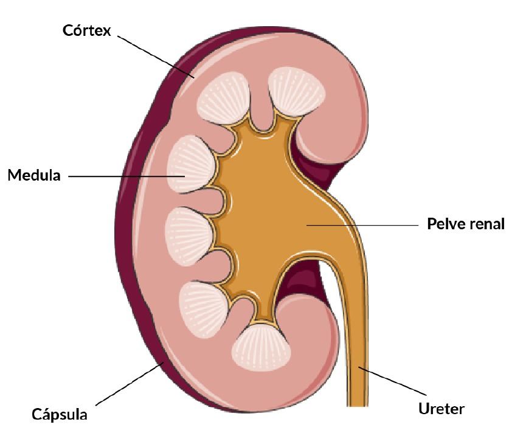

As unidades funcionais do rim são os néfrons e cada rim tem em torno de um milhão de néfrons. A filtração do sangue para eliminar as impurezas ocorre nos glomérulos, estruturas que fazem parte dos néfrons. Após passar pelos rins, a urina chega aos ureteres, que se desembocam na bexiga e, por fim, atravessa a uretra para ser eliminada.
Anatomia do sistema urinário feminino.

Fonte: Servier Medical Art, 2024.